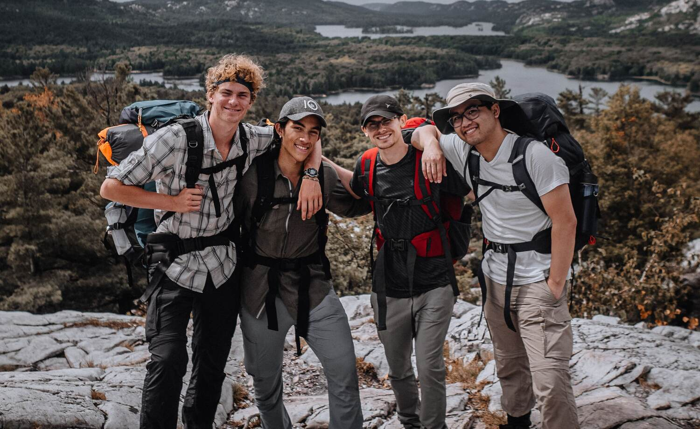

ABOUT RAINY DAYS
Since 1994, Rainy Days has focused on quality, design and comfort so that you can push your comfort zone throughout the day.
Rainy Days is enjoyed in the mountains, in the forest, on sailing trips and in everyday life. We inspire good experiences, every day, where we want you to push your comfort zone. Our garments are designed for trips in the park, on the mountain, in the river, on the slalom slope and in the neighbourhood. It's about getting out and pushing your own goals for the day.
Being active outdoors is something Norwegians are very keen on. From high mountains to ordinary streets, you should be comfortable no matter how bad the weather is.

NORWEGIAN DESIGN
Rainy Days value good quality, and all products have been designed and developed over a long period of time to create the best products. Our designers know the needs of the Nordic user. This has resulted in quality garments that are perfectly suited to the changing Norwegian climate.
